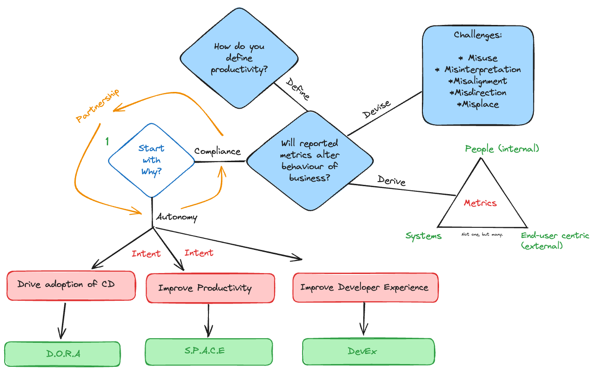
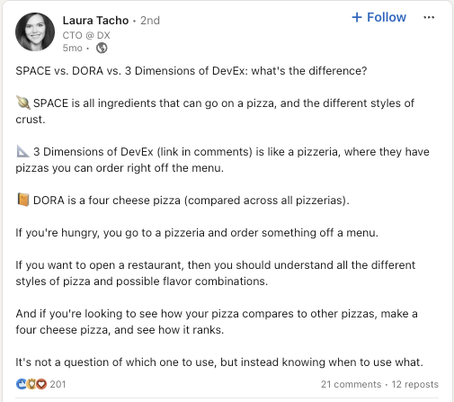

Measuring developer productivity is a hot and controversial topic, and there have been many contributions from the likes of McKinsey, Kent Beck, Dan North, Gergely Orosz that deal with the subject matter from both sides (we can measure accurately vs. measuring is hard). My intent is to rather provide guideposts to the leader placed in a position to measure developer productivity. What should he or she do if the request is part of compliance with business executives? Or how can they get comfortable with the idea, and how can they take the next steps?
The Driving Forces
Now the need to measure can come from two forces: an external request from business or an internal demand to improve. In the former case, where an executive team or manager is requesting metrics, we will call this compliance. In the second case, where a leader and member of the delivery team want to improve, we will call this autonomy. Autonomy because there are fewer constraints and a greater ability to succeed in measuring relative to the context of the team and its practices.
Guidepost 1: Why?
But before we begin any journey, we must ask: Why? This seems like an obvious question, but in some organizations, it is a very difficult question to get the answer to. Some organizations may require it with the solid intent of improving continuous delivery. Or executives might pursue it to create some sense of tangible measure of performance (like that seen in sales/manufacturing). Another might be an engineering manager frustrated with an inability to generate impact from a highly skilled team of developers. Both require different strategies, but ultimately, it's important to understand why they're being done.
- What is the perceived outcome of measuring developer productivity?
- Why is this outcome necessary?
- Could the outcome be a side-effect or is it a root-cause?
Compliance:
Guidepost 2: Behavioral Change
In terms of compliance, acceptance initially is key to granting you the room and space to be effective in communicating, inquiring, and sharing potential concerns. A fundamental question to ask is: if we did measure or leverage a set of measures and their results were negative; would they result in a change of behavior? More specifically, would business, management, or leadership invest to create the change they want. Is the lemon worth the squeeze?
Guidepost 3: Define
In compliance, it's very important to clarify terminology. One such word is productivity. We want more productive developers, sure, but what does that mean? Stable systems less features; unstable systems, rapid features. Iron out the terminology and be sure both parties are talking about the same thing.
Guidepost 4: Devise
In compliance, and if available, distill your concerns into well-articulated thoughts. When I was presented with the requirement to measure my teams, my first thought was DON'T. Inherently, all my years of experience as a developer and in leading teams had created a mental and abstract gate on my pre-frontal cortex that raised a red flag, but I was unable to articulate it effectively to others. Particularly business executives.
Recently, I sat down and did so, and these are my concerns/challenges to measuring developers:
- Misuse: loss of understanding of individual teams and how they operate, thus enforcing behavior that does not align with or correlate to the team's practices.
- Misinterpretation: Strategic decisions taken with generalized data across many teams that lead to large shifts in investments (time and money)
- Misalignment: Metrics in isolation are not silver bullets. Meetings may be considered the No. 1 hindrance to deep work. But in viciously addressing it, we could see strong declines in company culture and collaboration.
- Misplaced: A set of metrics is applied to achieve an outcome, but despite the positive nature of those metrics, it has little to no effect on that outcome.
- Misdirection: The metrics give the business a false sense that all teams are delivering well and equally because of their numeric compliance (Goodhart's Law).
Guidepost 5: Derive
If you do have the ability to aid in the metrics that can be leveraged to measure developers' performance, don't depend on any single metric. There are no silver bullets. Secondly, try making it a three-tier set of measures.
- With a people-based focus, this is about perceptions of how people feel or experience things.
- With a system-based focus, this is about attaining more factual or hard truths about the performance of systems.3. With a user-centric focus, this is about deciphering and honing in on the right outcomes of the consumed output.
Guidepost 6: Partnership
This is a crucial part, don't become the enemy of business or management. Rather, partner and see the journey as an experiment. Partnerships are a great mechanism for achieving the right outcomes, as they enable you to communicate concerns with a-lot more ease.
Autonomy
With autonomy, the journey should be the same: why and to what outcome, and how will measuring productivity attain it. It could often be an experiment to understand different measures and assess their worth and impact. But the worst thing you could do is to have metrics or measures for the sake of having them.
Guidepost 7: Mental Frameworks
If you are clear on your outcome, there are three strongly supported mental frameworks for measuring developer productivity. I won't go into the details of each here, but they are worth reading up on. That is the problem each is trying to address and the value you could derive from leaning on them.
D.O.R.A
Use case
If you are interested in migrating teams towards small changes, frequently deployed. This is great for teams that are still largely waterfall. DORA is meant to track delivery practices and measure them, not the productivity of people.
S.P.A.C.E
Use case
The focus of SPACE is to clarify developer productivity, but to also focus on more than just systems, but how people consume those systems. It's more of a holistic view of the software development lifecycle by not only improving how software is produced, but also optimizing how it is consumed within the organization.
DEVEX
Use case
DevEx is concerned with the overall experience of developers. The problems it addresses are:
- Tooling and infrastructure
- Processes and Practices
- Culture and feedback
DevEx focuses on making the development process more enjoyable and productive, which can lead to faster development cycles, higher quality software, and more innovation.
A helpful analogy for understanding the aims of these 3 studies is the following:

Hope that helps :)